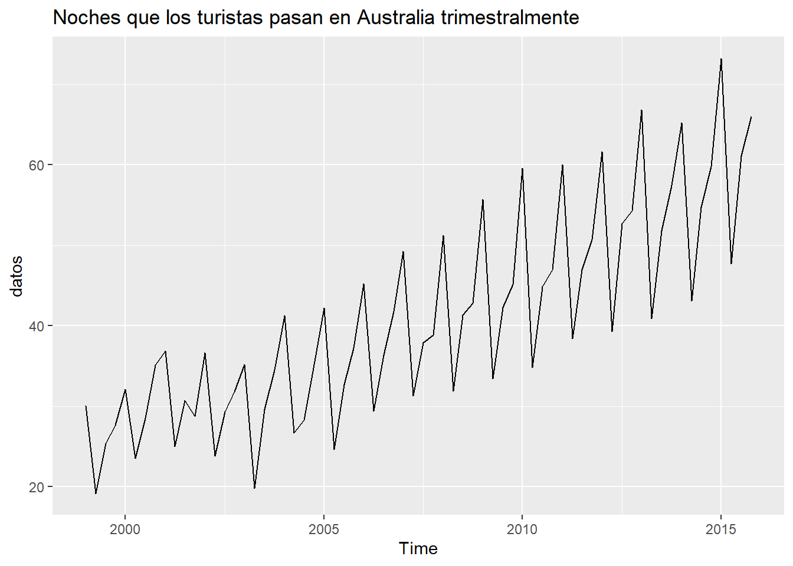
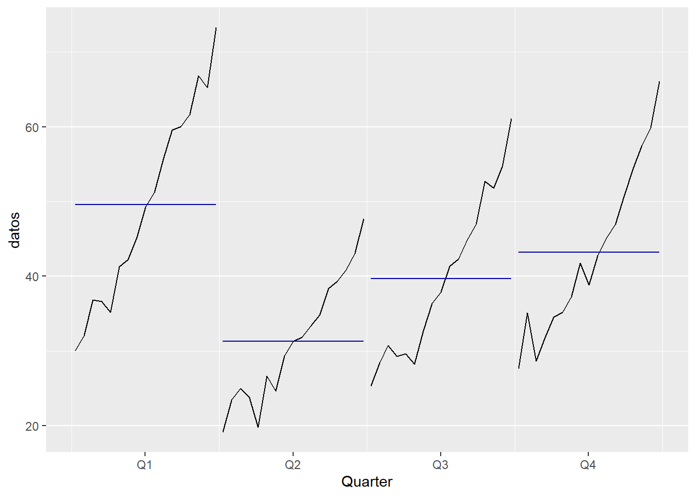

Esta serie detalla los miles de pasajeros que han volado a nivel mundial en el período indicado
library(fpp2)
AirPassengers## Jan Feb Mar Apr May Jun Jul Aug Sep Oct Nov Dec
## 1949 112 118 132 129 121 135 148 148 136 119 104 118
## 1950 115 126 141 135 125 149 170 170 158 133 114 140
## 1951 145 150 178 163 172 178 199 199 184 162 146 166
## 1952 171 180 193 181 183 218 230 242 209 191 172 194
## 1953 196 196 236 235 229 243 264 272 237 211 180 201
## 1954 204 188 235 227 234 264 302 293 259 229 203 229
## 1955 242 233 267 269 270 315 364 347 312 274 237 278
## 1956 284 277 317 313 318 374 413 405 355 306 271 306
## 1957 315 301 356 348 355 422 465 467 404 347 305 336
## 1958 340 318 362 348 363 435 491 505 404 359 310 337
## 1959 360 342 406 396 420 472 548 559 463 407 362 405
## 1960 417 391 419 461 472 535 622 606 508 461 390 432autoplot(AirPassengers) +
ggtitle("Monthly Airline Passenger Numbers 1949-1960")
library(summarytools)
library(knitr)
kable(descr(AirPassengers), caption = "Resumen de estadísticos descriptivos")| x | |
|---|---|
| Mean | 280.2986111 |
| Std.Dev | 119.9663169 |
| Min | 104.0000000 |
| Q1 | 180.0000000 |
| Median | 265.5000000 |
| Q3 | 361.0000000 |
| Max | 622.0000000 |
| MAD | 133.4340000 |
| IQR | 180.5000000 |
| CV | 0.4279947 |
| Skewness | 0.5710676 |
| SE.Skewness | 0.2020403 |
| Kurtosis | -0.4298441 |
| N.Valid | 144.0000000 |
| Pct.Valid | 100.0000000 |
Autocorrelogramas
ggtsdisplay(AirPassengers)Gráficos de estacionalidad
forecast::ggseasonplot(AirPassengers)forecast::ggseasonplot(AirPassengers, polar = TRUE)forecast::ggsubseriesplot(AirPassengers)
Pruebas analíticas para determinar presencia de tendencia y estacionalidad: test de Cox-Stuart y test de Friedman.
library(randtests)
randtests::cox.stuart.test(AirPassengers)##
## Cox Stuart test
##
## data: AirPassengers
## statistic = 72, n = 72, p-value < 2.2e-16
## alternative hypothesis: non randomnesslibrary(seastests)
seastests::fried(AirPassengers)## Test used: Friedman rank
##
## Test statistic: 106.68
## P-value: 0datos.training <- window(AirPassengers, end = c(1959, 12))
datos.test <- window(AirPassengers, start = c(1960, 1))datos.training## Jan Feb Mar Apr May Jun Jul Aug Sep Oct Nov Dec
## 1949 112 118 132 129 121 135 148 148 136 119 104 118
## 1950 115 126 141 135 125 149 170 170 158 133 114 140
## 1951 145 150 178 163 172 178 199 199 184 162 146 166
## 1952 171 180 193 181 183 218 230 242 209 191 172 194
## 1953 196 196 236 235 229 243 264 272 237 211 180 201
## 1954 204 188 235 227 234 264 302 293 259 229 203 229
## 1955 242 233 267 269 270 315 364 347 312 274 237 278
## 1956 284 277 317 313 318 374 413 405 355 306 271 306
## 1957 315 301 356 348 355 422 465 467 404 347 305 336
## 1958 340 318 362 348 363 435 491 505 404 359 310 337
## 1959 360 342 406 396 420 472 548 559 463 407 362 405datos.test## Jan Feb Mar Apr May Jun Jul Aug Sep Oct Nov Dec
## 1960 417 391 419 461 472 535 622 606 508 461 390 432